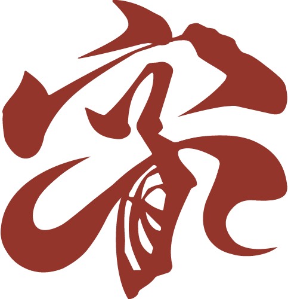
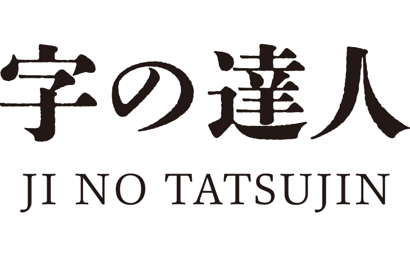

店舗ロゴ・看板
お店の顔となる店名に、ひと目で伝わる個性を。飲食店や企業の世界観に寄り添う文字をご相談いただけます。


時が経っても、色あせない顔になるように。 プロの書道家が紡ぐ、世界にひとつの手書き文字。
画面の中で作られた整然とした文字は、時に人の心をすんなりと通り過ぎてしまいます。 だからこそ、手から生まれる一筆には『確かな信頼』が宿ります。 店舗や空間を彩る文字も、理念を宿すブランドロゴも、人生の節目を飾る書も。 あなたが大切にしたい、言葉の奥にある思いをかたちにします。
時代が変わっても色あせない、長く愛され続ける佇まいへ。
力強さも、しなやかさも。
一つひとつ異なる、手書きの表情をご覧ください。
完全オーダーメイドにて承ります。
ご要望、ご使用のシーン、ご予算に合わせて、プロの書道家が制作させていただきます。
お店の顔となる店名に、ひと目で伝わる個性を。飲食店や企業の世界観に寄り添う文字をご相談いただけます。
商品に込めたこだわりを、文字の表情へ。ラベル、パッケージ、グッズなど、使う場面から一緒に考えます。
大切な節目に贈る言葉から、デザイナー・制作会社の筆文字パーツまで。具体的なイメージがなくてもご相談ください。
まだ、言葉になっていなくても大丈夫です。
大切にしたいことを、お聞かせください。
書きたい文字、込めた思い、使う場所、ご予算、希望時期をお知らせください。
書風、文字数、用途などから制作内容をご相談。料金、納期、提案数、修正条件、利用範囲を制作前に確認します。
共有したイメージをもとに、プロの書道家が一筆ずつ表現。ご確認いただきながら仕上げていきます。
使用する媒体に合わせ、納品形式やサイズを事前にご相談。データ化や原本のご希望もお伝えください。
文字数、書風、使用用途、納品形式により個別にお見積もりします。
ご予算と希望納期を添えてご相談ください。お急ぎの場合も、まずは対応可否をお問い合わせください。
文字は、情報を伝えるだけのものではありません。線の太さ、墨のかすれ、余白の取り方。その一つひとつが、言葉に表情を生みます。
字の達人は、プロの書道家によるオーダーメイドの手書き文字制作サービスです。まずは、あなたが何を大切にしているかを知ること。その思いと使われる場面に向き合い、文字のかたちを考えます。
はい。使用する場所や伝えたい雰囲気からお聞かせください。参考画像や「力強く」「やわらかく」といった言葉でも、方向性を考える手がかりになります。
文字数や用途、制作内容に応じて個別にご案内します。ご予算と希望時期をフォームにご記入ください。確定した料金・納期は、制作を始める前に確認します。
店舗ロゴや商品などの商用用途もご相談いただけます。使用媒体、利用範囲、著作権の取り扱い、商標登録の予定は、制作前にご相談・確認ください。
ご使用シーンに応じてご相談します。画像データ、印刷用データ、原本など、ご希望をお知らせください。データ化の対応範囲や費用は、お見積もり時に確認します。
はい。筆文字部分のみの制作もご相談ください。サイズ、縦組み・横組み、背景の有無、納品形式など、制作上の要件をお伝えいただくとスムーズです。
修正回数、追加費用、キャンセル条件は制作内容に応じて事前に確認します。方向性の変更や追加のご希望は、制作の進行段階によって対応が異なるため、ご相談ください。
この度のご縁に心より感謝いたします。
筆文字やロゴ制作のご相談・お見積もりはこちらから。
まだ具体的でなくても、思いのままに。
3営業日以内に、担当者より折り返しご連絡いたします。
字の達人は、ご入力いただいたお名前・メールアドレス・ご相談内容を、お問い合わせへの回答および制作のご相談に使用します。フォームの送信には外部サービスFormSubmitを利用し、入力内容は同サービスを経由して送信されます。個人情報に関するお問い合わせは、yamasakioka@gmail.comまでご連絡ください。